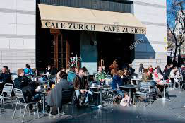

New York
Central Park
Februar 2018. Piper Chapman gik rundt i Central Park Zoo, med sin forlovede, da politiet pludselig stod foran hende. Er du Piber Chapman, spurgte de. Ja, svarede hun. Klokken er nu 16.55 og du er anholdt. Piber kiggede forvirret på sin forlovede og udbrød; Nej !det må være en fejl!


colombia
Medelìn
Men det viste sig, at Piper for ti år siden , under en rejse til Colombia, mødte en mand der hed Walter White. Han var familiefar og kemiker og solgte vitaminpiller. Han sad i en lille lejlighed i "Calle 46- Maturin", og fremstillede pillerne, der viste sig at være kokain. Det bedste af slagsen, ifølge de lokale pushere.

Miami
Miami Beach Golf Club
Vitaminpillerne, som var det reneste kokain, solgte Piper til hendes ex-kæreste Alex, hun havde nemlig gode forbindelser i "Miami Beach Golf Club". Klubben hvor alle de rige amerikanere hyggede sig, imens de spillede golf og sniffede coke og drak champagne.

København
Vestre Fængsel
Men Alex var en rigtig dum exkæreste, så hun angav Piper til politiet. Men fordi de amerikanske fængler er overfyldte,blev Piper deporteret til Vestre fængsel i København,hvor hun mødte mange nye venner, bla. Crazy Eyes, der var så skør at hun troede at Piper ville være hendes nye kone.

Barcelona
Bar Zurich
Piper var ret bange for Crazy Eyes, så hun gav fængselbetjenten John Bennet en million dollars, for at hjælpe hende, med at flygte fra fængslet. Så lige nu imens jeg står og snakker, sidder Piper og nyder en Cafe Latte,på Bar Zurich i Barcelona.
